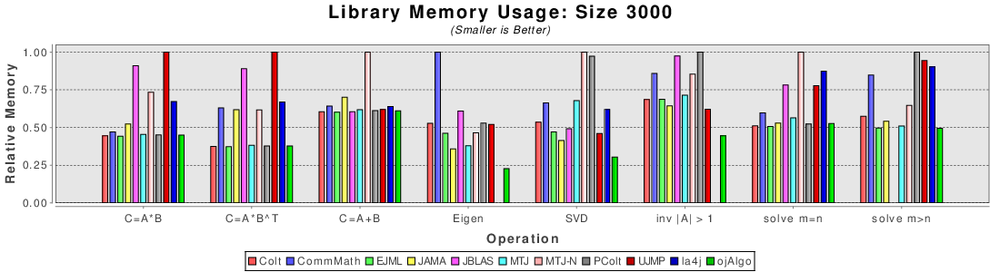

Description of Memory Usage Benchmark

Plot showing relative memory usage for each library in different mathematical operations.
Introduction
As the size of a matrix grows how memory efficient a library is becomes more and more important. For many problems (e.g. machine learning or data mining) the problems can be so large that they exceed the total memory available in the computer. Often times memory usage is traded for speed and data abstraction. What might allow a library to run faster can make it unusable for other problems by using up too much memory.
Measuring the amount of memory each library uses in Java is not a trivial task. Even when the exact same code is called it can vary depending on the run. Garbage collectors (GC) might decide to postpone freeing memory for performance reasons. Memory usage can vary with time, making how often it is sampled important. What this benchmark is attempts to measure is the minimum amount of memory required by each library to accomplish some task.
At the top of this page is an example of a relative memory usage plot. For each operation how much memory is used by each library relative to each other is shown. Taller bars indicate that more memory was used relative to other libraries.
To run the benchmark, use the following command:
java -jar build/jar/benchmark_app.jar memory
Procedure
For each test a new JVM is spawned and a large amount of memory is allocated to the JVM using -Xms and -Xmx. Memory usage is monitored using “/proc/PID/status”. While this approach is operating system (OS) specific. it produces better an more accurate results than an easier cross platform strategy used before. After memory has been measured once using this procedure, the same test is performed again. However, this time the amount of memory allocated to JVM is amount which was measured previously. This is repeated until memory usage converges or out of memory errors are thrown.
By changing the JVM’s heap size the GC is forced to free memory sooner, allowing the minimum memory usage to be measured. The JVM’s overhead is measured in the beginning by running the procedure mentioned above with no library or operation being called. This is done several times. The reported memory used to create the plots for each library is the minimum amount observed minus overhead.
Matrices of the same size are used for operations. If possible square matrices are used, if a rectangular matrix is required the the reported size is the size of the smallest side. Each operation is tested several times and the variability across all these trials is recorded.
Old Procedures
THIS IS NOT HOW MEMORY IS MEASURED ANY MORE
For historical purposes (and to prevent people from suggesting this technique in the future) the following is a description of how memory was initially measured.
For each test a new virtual machine is created with a different amount of memory. The amount of memory is specified using -Xms and -Xmx flags. Most of the time if there is not enough memory an out of memory exception is thrown. If there is just barely enough memory then the operation will take an excessive amount of time to finish. In the later case a time out is used to detect it and is treated as if an out of memory exception was thrown.
The problem with this approach is that all the libraries seemed to converge to within the same block of memory. Libraries that were known to use more memory by design didn’t take up any extra memory.